Unlighted
The game
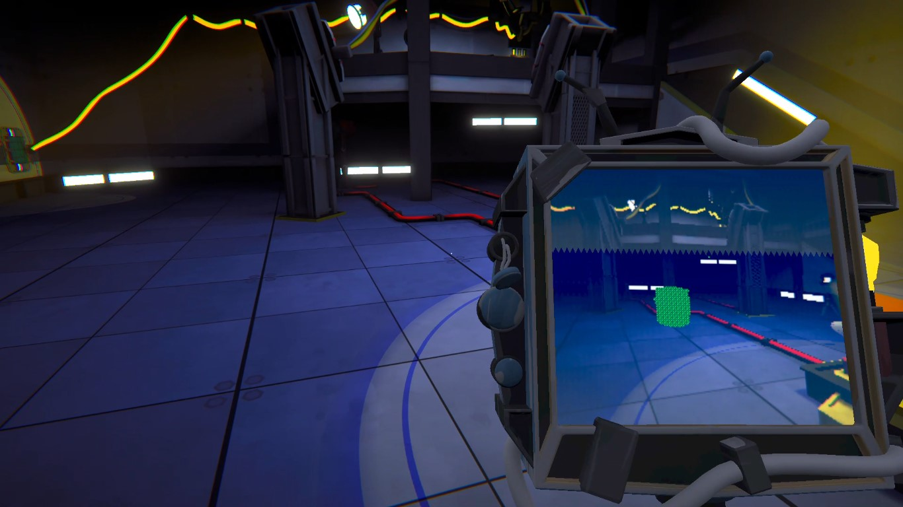
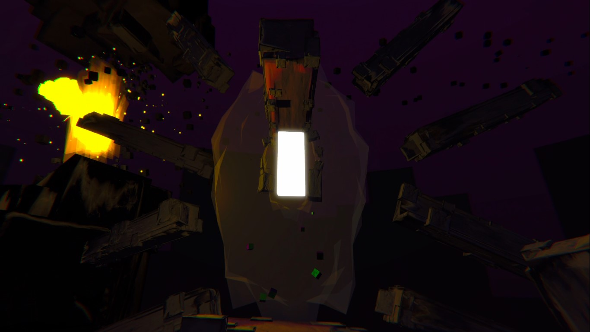
Roles
-
For Unlighted's level design, we though on three types of levels: tests, umbral and post-explosion. In addition, we also featured a final level that worked as a Bossfight.
Levels
Type Description Quantity Tests These levels served as a tutorial, they were more guided and presented most of the game mechanic our game had. Since they are weird and may be difficult ot understand for some people, it was the perfect way to match the eerie story with the weird mechanics. 14 Umbral These levels interesct with the 'tests' ones. They break the monotony of the closed rooms and bring fresher mechanics to the game. At the same time, these feature a new different dimension, so there is a lot to explore. These are rich in story-telling. 3 Post-explosion When all mechanics are setted up and the story advances, the player escapes from the tests and starts to walk through the facilities. The levels are bigger than before, showing destruction and open paths for the player to explore. Here, the different worlds blend and all mechanics can be used together. 3 Final To finish the game, we wanted a big finale that wrapped all the mechanics learned during the game. This final boss was not about fighting, but about escaping using all the abilities in the player's hands. This features a fight between Bill and Sofia, the two main characters, where the player has to decide who to help. 1 21 Test N10 (2D Layout / BlockOut / Final)
2D Layout
Using Figma, the 2D Layout is the first idea of the level. The final level doesn't always end up being the same as the layout, but is a great initial thought of the puzzle.
We divide the layout in two parts: the explanation and the drawing; connected through numbers. We start with the drawing, showing where the different elements will be distributed on the level, dividing it into separate sections and assigning a number on each. Then, for the explanation part, we write about what happens in each section, so the rest of the team know what the player should do.
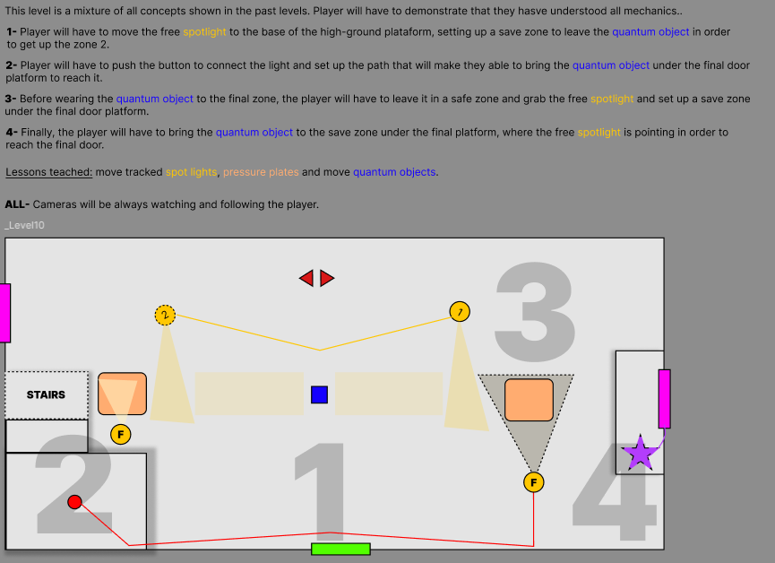
Blockout
Using Unity, the blockout is the representation of the 2D Layout for first time in the level. Here, some iterations may be done to adapt the level to the real movement and abilities of the player. It stops being an idea and starts being real.
For that, we used different color textures and prefabs to mount the level. Moreover, some notes as writed down to help the environment artist put together all the assets once they start working. This helps the team communication and avoids unnecessary misunderstandings.
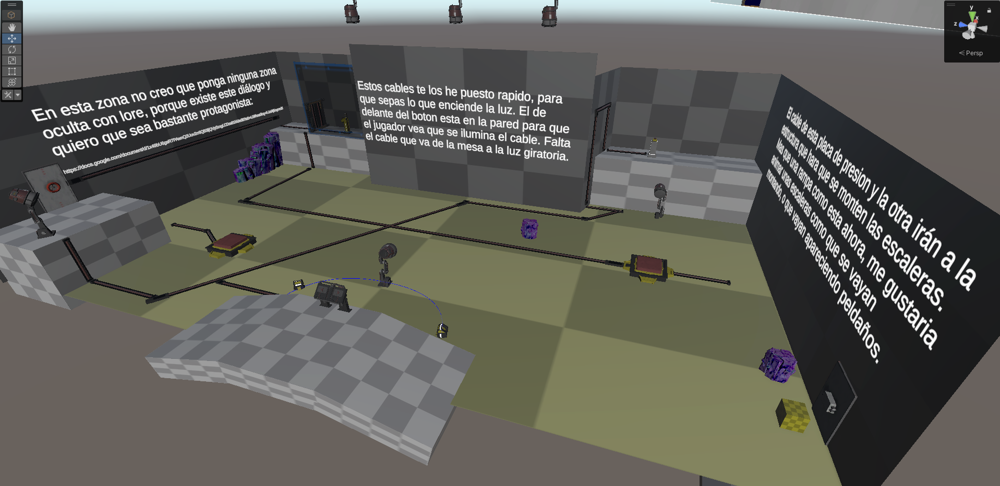
Final
Here is where our environment artist starts working and bring to life the level that was though. It is not my work anymore, but his to illuminate, place the necessary assets and make it feel real.
It's possible that I may have some intervention at this point, but not probable. After some playtesting, if someone finds something that does not fit the game, I'll come by and modify what's necessary to make it feel right.
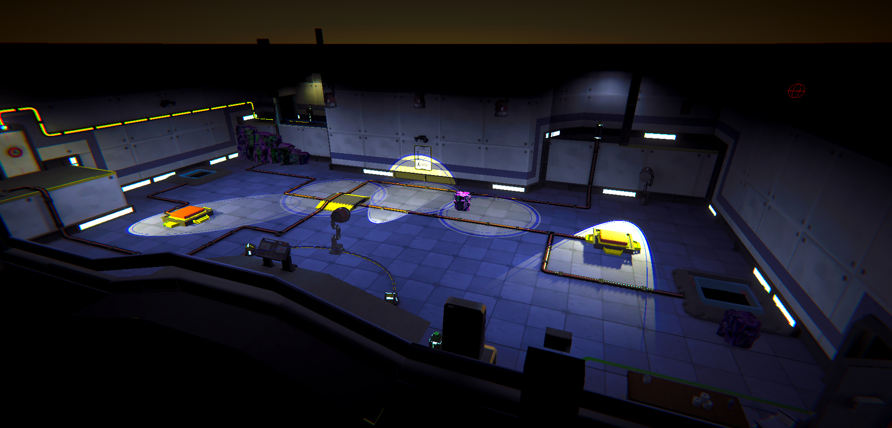
Umbral LVL2 (2D Layout / BlockOut / Final)
2D Layout
Following the same pattern as before, the layout of the umbral levels are thought. This ones are the most funny to create, since I am able to add crazier and weirder features to the game.
For example, in this level, there is a section (number 3) where the player is lost in a non-way-out laberinth. However, if they use the scanner they will see some numbers writed on the walls and, if they follow them, they will be able to find the laberinth's exit and continue with their path.
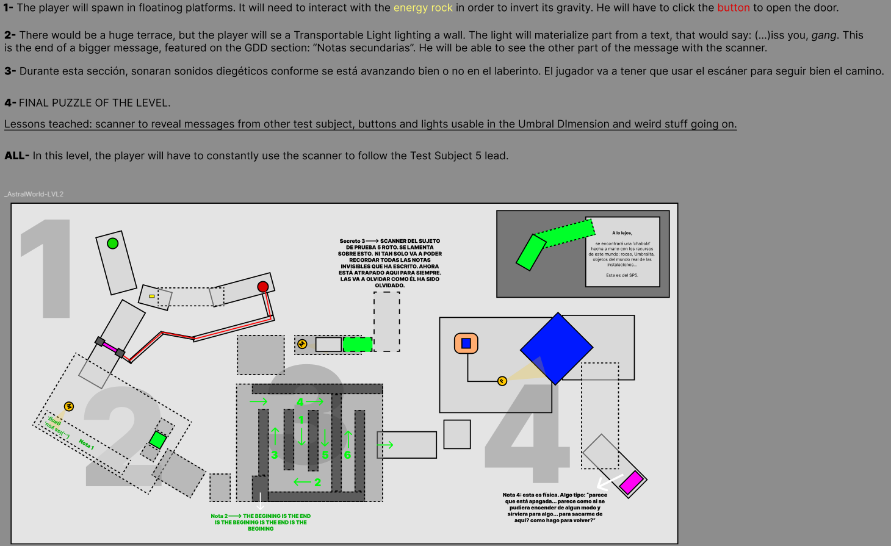
Blockout
In this level, bigger than the others at the moment, the blockout's notes are more important than ever. Alongside the environment artist, we though of a note-code to integrate it in the scene, so we both know what we are talking when playing the level:
Green text: Means this will be invisible text that the player will be able to see through the scanner.
White text: My comments, guiding my peer when it comes to add props and lighting.
White text (Drive links): As I writed the scripts and lore of the game, I letted him know when and what note will appear on each section of the level. I would paste the Google Drive's link to the note.
Final
Once the blockout was finished, our artist created a marvelous environment that perfectly matched the level.
Thanks to the good communication held, all the tiny details persisted over the layout, through the blockout and to the final level, such as:
- The exit monolith is visible from the first button the player interacts with.
- From where the note is found the user can still see the exit, as well as some structure far away.
- In the laberinth entrance there is a suspicious sprite showing the player's scanner, encouraging the player to use it to see the order of the laberinth.
Post-explosion (LVL16)
2D Layout
These levels were more about exploration. We wanted the user to feel lost, so the first thing to cause that is making bigger levels, more rooms, more to explore. We wanted to evoke chaos, so we used some visible and standard facilites rooms, such as offices, or even a kitchen and then destroy them to show inestability.
Mechanically, from the start of the game, we wanted the user to be able to use the invert gravity mechanic inside the Umbral Alchemy facilities, and these levels were the perfect situation to do that.
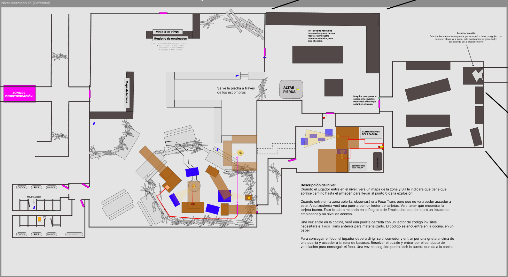
Blockout
These blockouts had to be pretty safe explanatory, since we wanted the spaces to talk by themselves, so the use of colors for the various structures helped me to differentiate to the artist the zones the player would be able to invert gravity and those where the user should explore in a more conventional way.
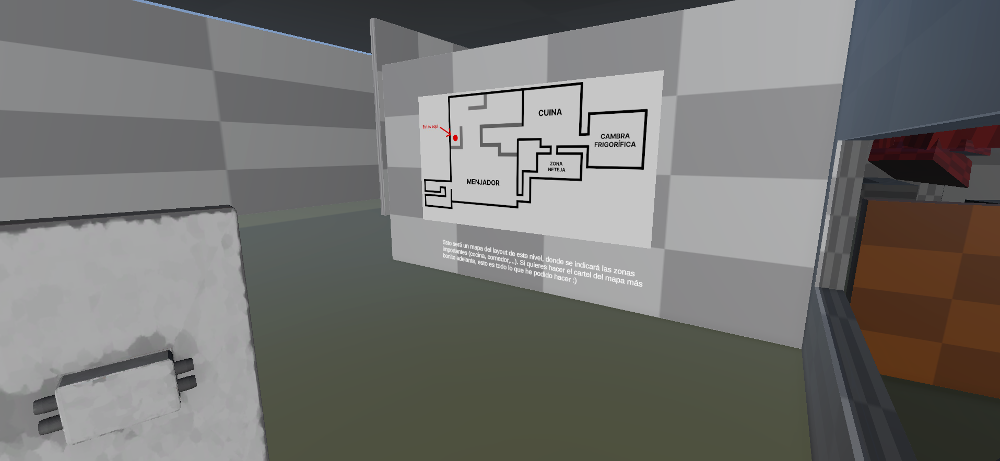
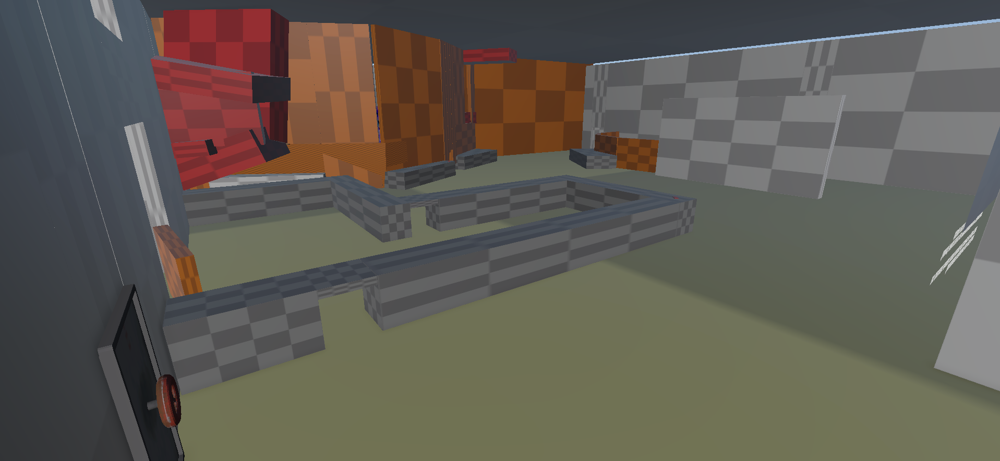
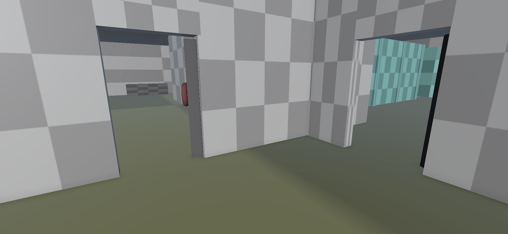
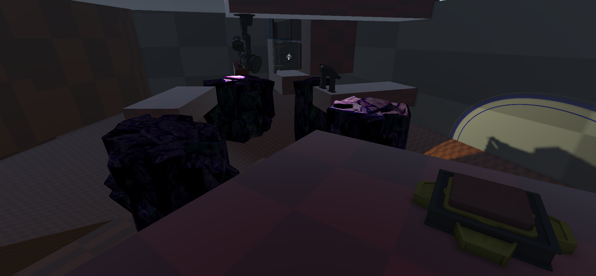
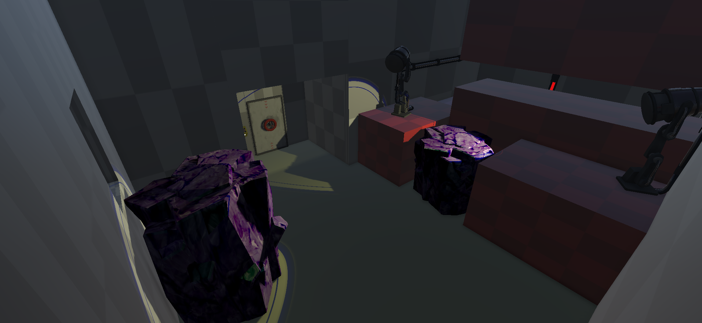
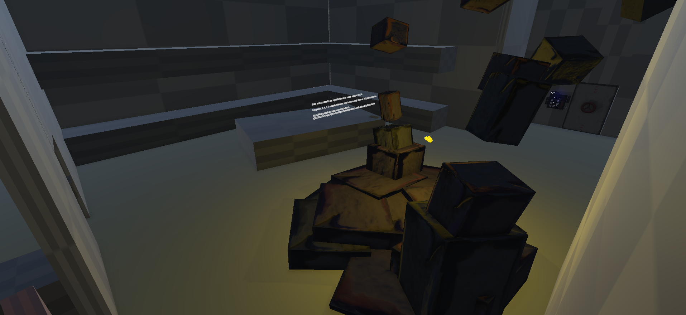
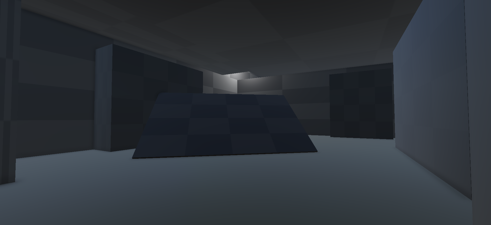
Final
New spaces, great variety of rooms and different intentions specific for each of them. After the level coming together in its final shape, we accomplished what we were looking.
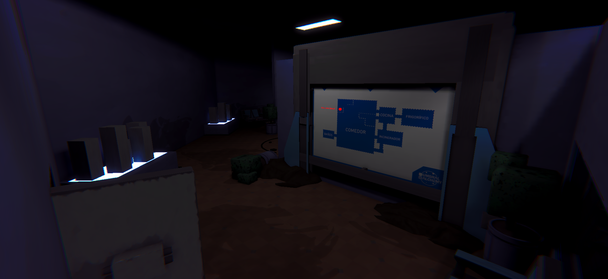
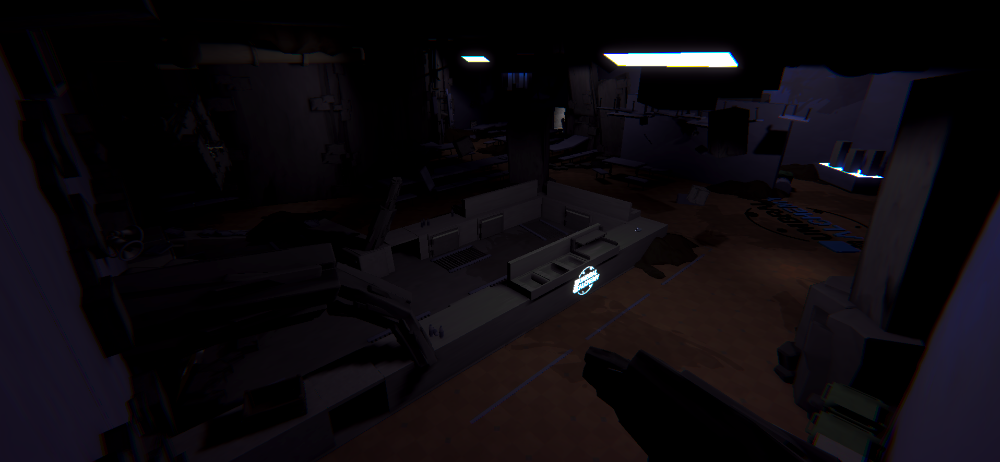
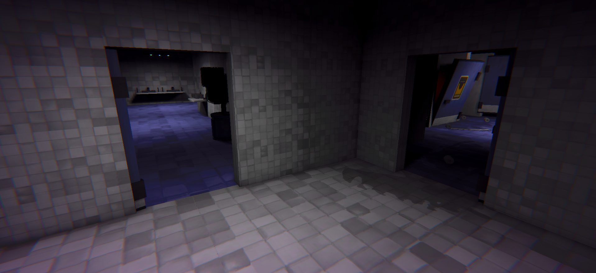
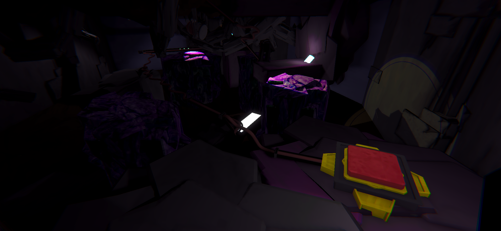
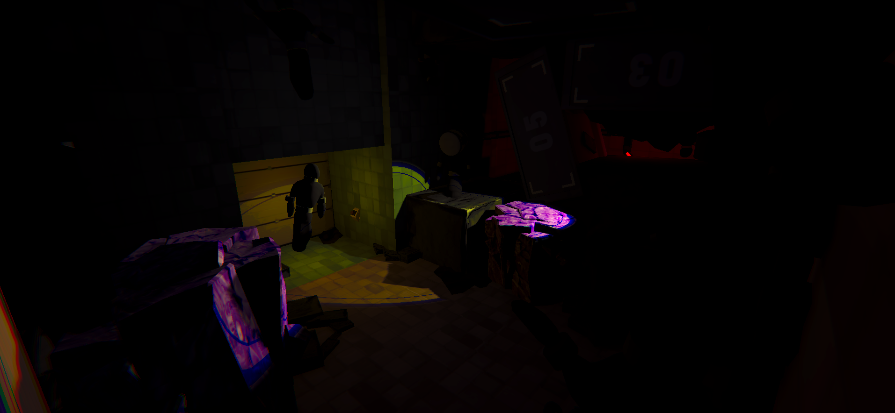
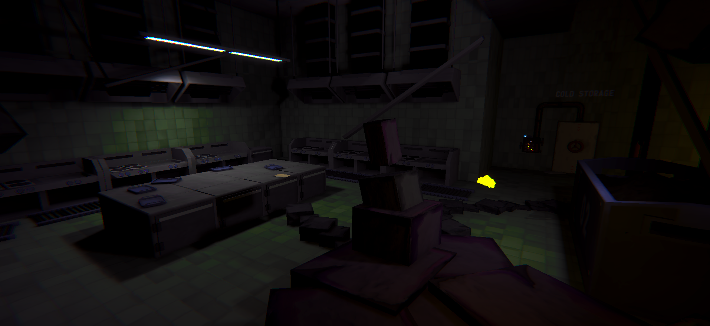
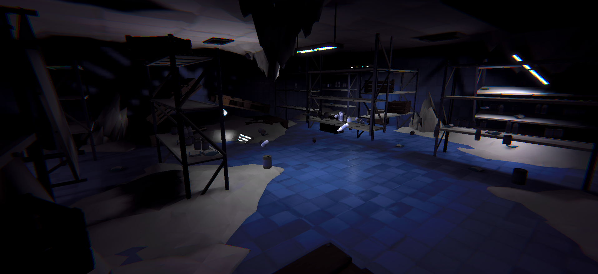
Final level (Bossfight)
2D Layout
For this level I stepped directly into the blockout from this layout, since I wanted to try new things and feelings to the game. You will se how this changed. I had the main idea in mind, though, that was escaping from a self-moving world.
Finally, we though about our two main character fight each other, while the player was just in the middle, trying to help one or the other. These characters foguht by using their divine powers by moving walls, assets and floors from the user's sorroundings.
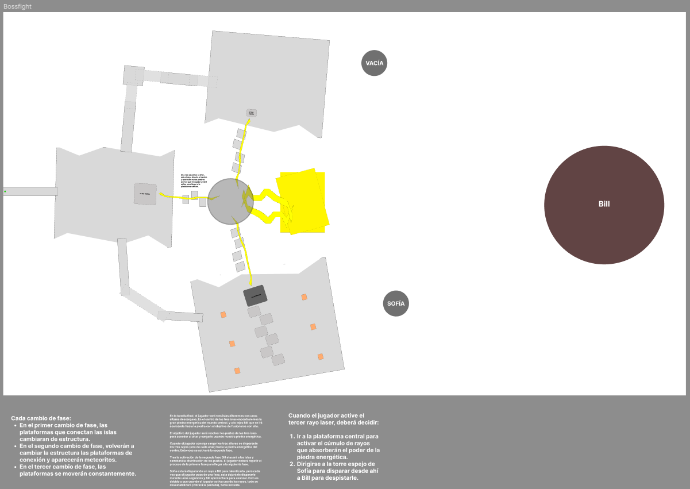
Blockout
The idea of the structures being alive and a soundtrack matching the player's steps fascinated me and I finally applied it to Unlighted.
Once I knew clearly what to do, I started blocking the whole level and talking with our composer, since I wanted the music to match the tempo of the level, just like the Ashtray Maze in Control (Remedy Entertaiment, 2019) .
The following video was a WIP little prototype of how I wanted the final level to look that I shared with the composer.
After a few talks with the composer, a more advanced blockout was build, with some dialogues already integrated.
Final
After our artist stepped by and after some iterations, we finally had our final level that worked as a bossfight.
Music was still not part of the level.
Writer
Once we had the fantasy of the game and some ideas of the plot, I was in charge of writing down all the cutscenes and dialogues of the characters. In addition, I also managed the Voice Over recordings and the audio edition.
To end, I writed all the secondary notes that the player can find across the levels. These serve as a complement of the main dialogs, and helps the player to know better the storyline of the game, which could had been harder to understand without them.
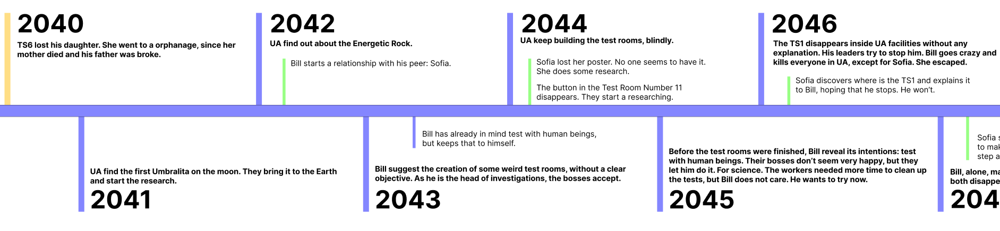
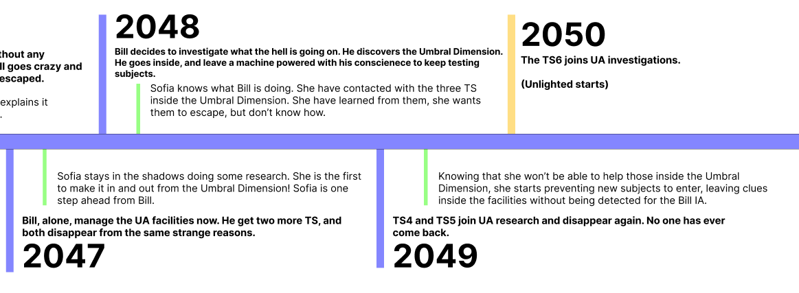
- © David Boces
- Design: HTML5 UP